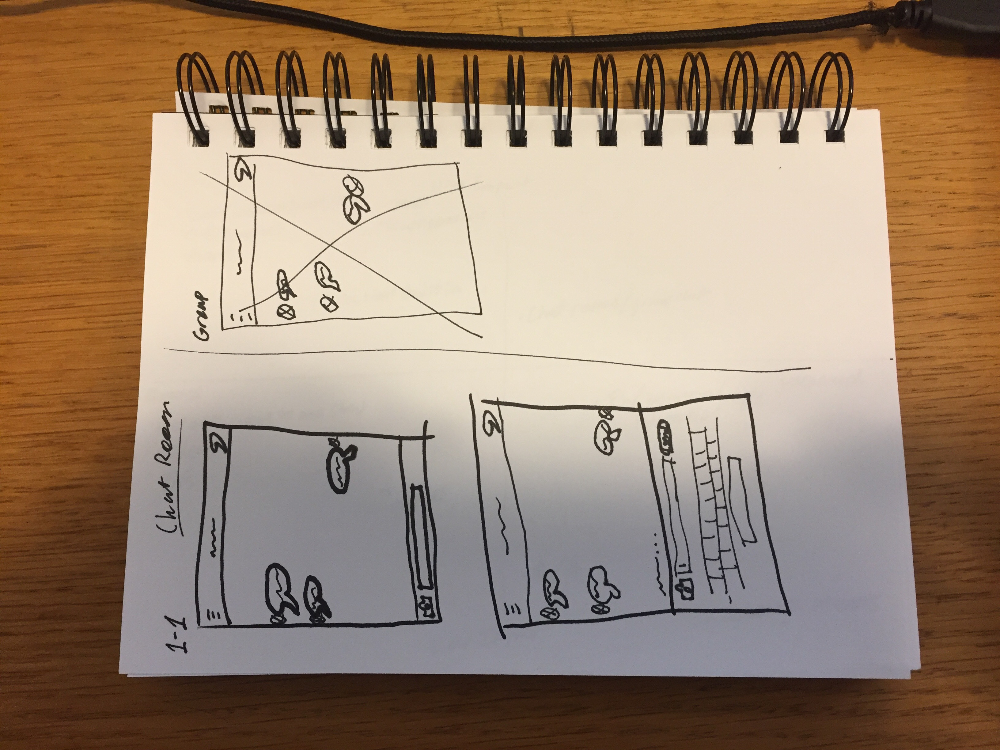
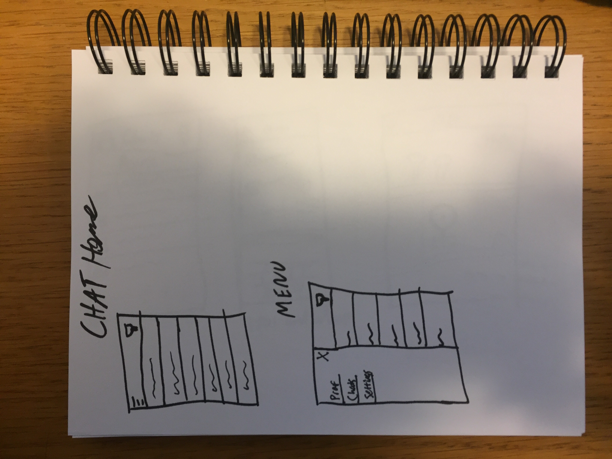
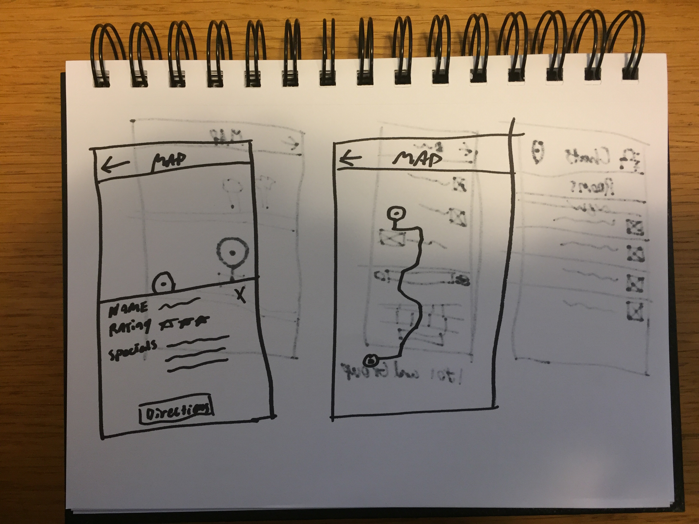
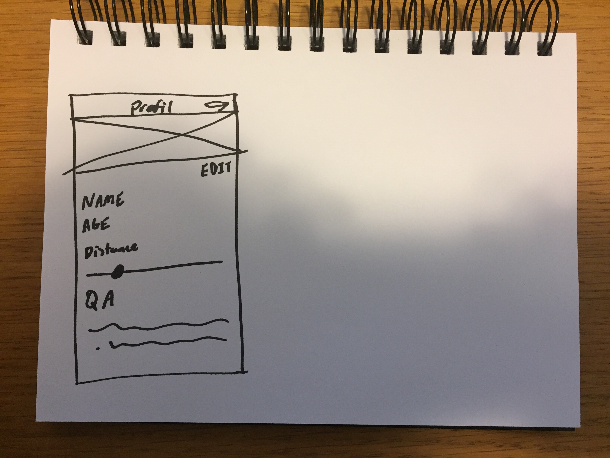
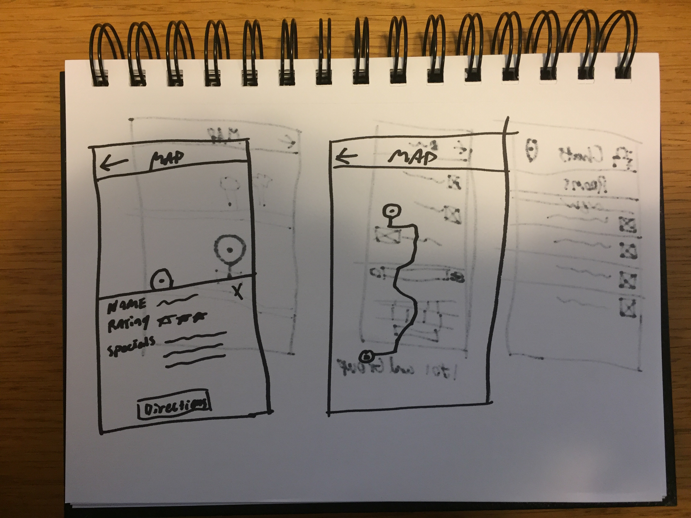
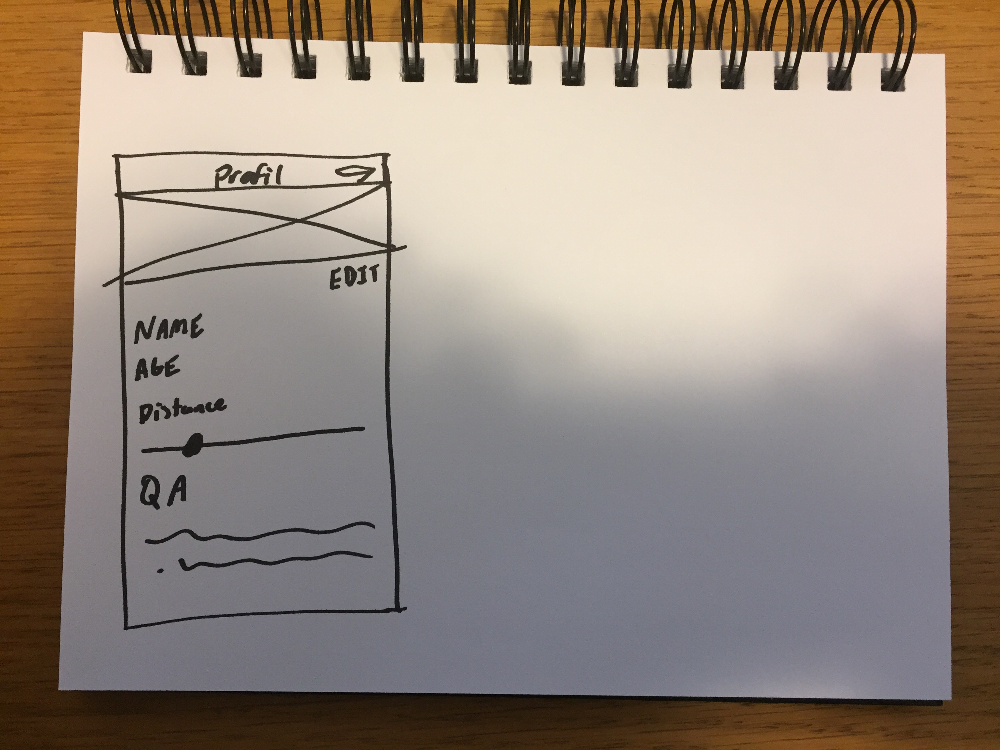
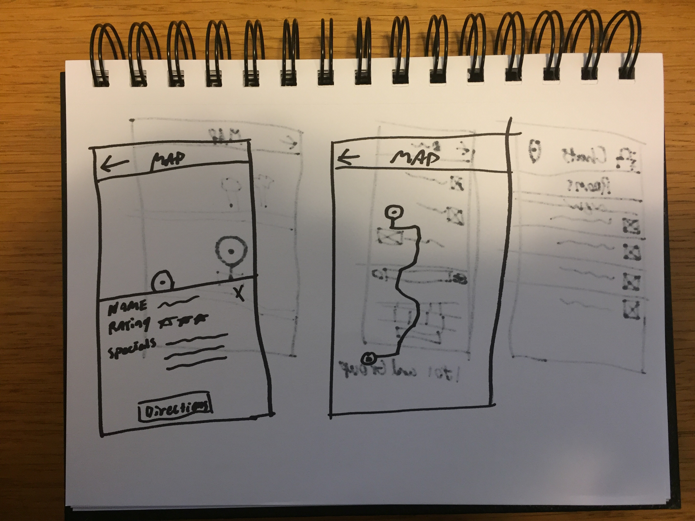
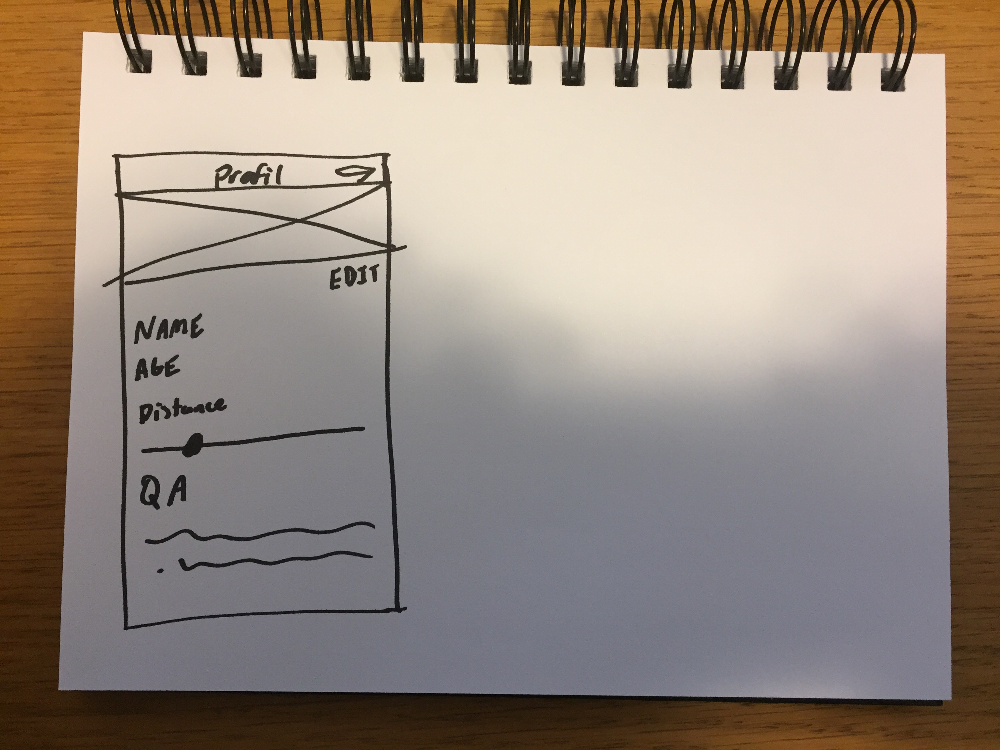
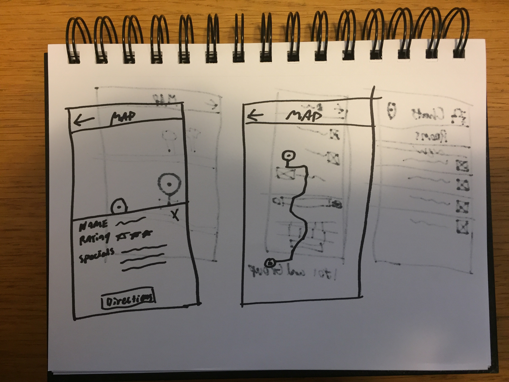
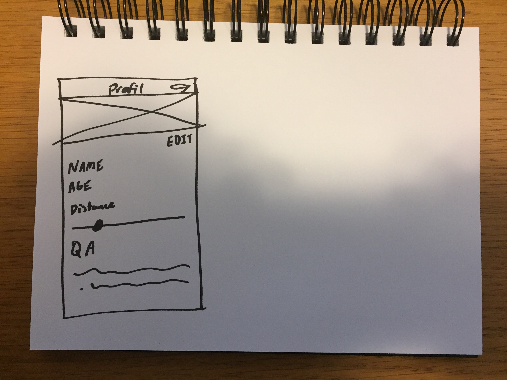

Wireframe Sketches


 





People do have an easy and reliable way to connect or meet new people in their immediate area because not everyone is an outgoing social person.
How might we connect people new to a city with locals to find the best spots in town?
I believe that using your location to connect you to the people around you will help foster and create new relationships. We will know this is true by number of downloads and positive reviews.
Facebook and Twitter rarely provide details about local crimes (robbery, shootings, muggings, etc.). This application would connect people using location services to warn each other about a possible crime and to help keep them safe.
Many of my friends and coworkers either travel for work or have relocated to new cities where they don’t know anyone. Exploring a new city can be fun, but can also be a daunting task.
Using location services inside your smart phone, you can use connect with locals to learn about the best spots in the city.
Primary research conducted through interviews
Users who travel for work would prefer to not explore the city after work and find a good place to eat or drink
“Even hotels don’t know the best places for food or if there is a good show in town.”
“The hardest part of moving to a new city with no friends was finding something to do.”

